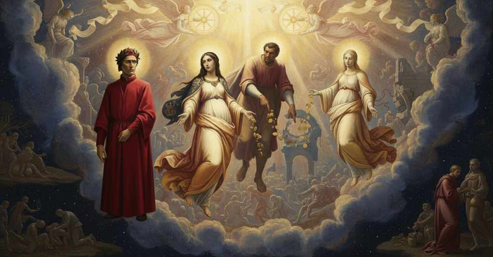

Paradiso — Canto 9

Nel cielo di Venere Cunizza profetizza le colpe e i castighi della Marca, mentre Folco celebra Raab e condanna Firenze e la corruzione della Chiesa causata dal fiorino. In the Heaven of Venus, Cunizza prophesies the sins and punishments of the Marca, while Folco celebrates Rahab and condemns Florence and the Church’s corruption caused by the florin. 金星天で、クニッツァはマルカの罪と罰を予言し、フォルコはラハブを称え、フィレンツェとフロリン金貨が招いた教会の腐敗を非難する。
1
Da poi che Carlo tuo, bella Clemenza,
After your Charles, fair Clemenza,
あなたのカルロが、美しきクレメンツァよ、
2
m’ebbe chiarito, mi narrò li ’nganni
had enlightened me, he told me of the deceits
私に明らかにした後、欺瞞を語った
3
che ricever dovea la sua semenza;
that his seed was destined to receive;
その子孫が受けねばならぬであろうことを。
4
ma disse: «Taci e lascia muover li anni»;
but he said: “Be silent and let the years move”;
しかし言った、「黙して年月の過ぎるにまかせよ」と。
5
sì ch’io non posso dir se non che pianto
so that I can say nothing except that a just
だから私は、涙以外には何も言えぬ
6
giusto verrà di retro ai vostri danni.
weeping will come in the wake of your harms.
正しきものが、あなた方の損害の後に来るであろうと。
7
E già la vita di quel lume santo
And already the life of that holy light
そして既に、あの聖なる光の生命は
8
rivolta s’era al Sol che la rïempie
had turned again to the Sun that fills it
それを満たす太陽の方へと向き直っていた
9
come quel ben ch’a ogne cosa è tanto.
as the good that for all things is sufficient.
あらゆるものにとって十分な、あの善のように。
10
Ahi anime ingannate e fatture empie,
Ah, you deluded souls and impious creatures,
ああ、欺かれた魂たちよ、不敬なる者たちよ、
11
che da sì fatto ben torcete i cuori,
who from such a good wrench your hearts,
そのような善から心を背け、
12
drizzando in vanità le vostre tempie!
directing your temples toward vanity!
思いを虚栄に向けている者たちよ！
13
Ed ecco un altro di quelli splendori
And behold, another of those splendors
そして見よ、あの輝きの一つがまた
14
ver’ me si fece, e ’l suo voler piacermi
made its way toward me, and its will to please me
私の方へとやって来て、私を喜ばせたいというその意志を
15
significava nel chiarir di fori.
it signified by brightening outwardly.
外側を輝かせることで示していた。
16
Li occhi di Bëatrice, ch’eran fermi
The eyes of Beatrice, which were fixed
ベアトリーチェの瞳は、以前のように
17
sovra me, come pria, di caro assenso
upon me, as before, with dear assent
私の上に据えられ、私の望みへの
18
al mio disio certificato fermi.
assured me that my desire was confirmed.
愛しい同意を、私に固く保証した。
19
«Deh, metti al mio voler tosto compenso,
“Pray, give to my will swift compensation,
「ああ、私の望みに、すぐに報いをください、
20
beato spirto», dissi, «e fammi prova
blessed spirit,” I said, “and give me proof
祝福された霊よ」と私は言った、「そして、私に証明してください
21
ch’i’ possa in te refletter quel ch’io penso!».
that I can reflect in you what I am thinking!”.
私が思うことを、私があなたの中に映し出せることを！」。
22
Onde la luce che m’era ancor nova,
Whereupon the light that was still new to me,
すると、私にはまだ新しかったその光は、
23
del suo profondo, ond’ ella pria cantava,
from its depth, whence it was singing before,
それが先に歌っていた、その深淵から、
24
seguette come a cui di ben far giova:
continued, like one who delights in doing good:
善をなすことを喜ぶ者のように続けた。
25
«In quella parte de la terra prava
“In that part of the wicked Italian
「邪悪なイタリアの地の、あの部分に
26
italica che siede tra Rïalto
land that lies between Rialto
リアルトと
27
e le fontane di Brenta e di Piava,
and the springs of the Brenta and the Piava,
ブレンタとピアーヴェの源泉の間に座す、
28
si leva un colle, e non surge molt’ alto,
a hill rises, and it does not surge very high,
一つの丘がそびえ、それほど高くはないが、
29
là onde scese già una facella
from which there once descended a firebrand
そこからかつて一本の松明が下り、
30
che fece a la contrada un grande assalto.
that made a great assault upon the region.
その地方に大いなる襲撃を加えた。
31
D’una radice nacqui e io ed ella:
From one root he and I were born:
一つの根から私とそれは生まれた。
32
Cunizza fui chiamata, e qui refulgo
I was called Cunizza, and I shine here
クニッツァと私は呼ばれ、ここで輝くのは
33
perché mi vinse il lume d’esta stella;
because the light of this star vanquished me;
この星の光が私に打ち勝ったから。
34
ma lietamente a me medesma indulgo
but joyfully I grant indulgence to myself
しかし私は喜んで、私自身に許す
35
la cagion di mia sorte, e non mi noia;
for the cause of my fate, and it does not grieve me;
我が運命の原因を、そしてそれを私は厭わない。
36
che parria forse forte al vostro vulgo.
which would perhaps seem harsh to your common folk.
それは恐らくあなた方の俗衆には難しく思われるでしょうが。
37
Di questa luculenta e cara gioia
Of this luculent and precious joy
この、光り輝く親愛なる至宝の
38
del nostro cielo che più m’è propinqua,
of our heaven who is closest to me,
我らの天の、私により近い者の
39
grande fama rimase; e pria che moia,
great fame has remained; and before it dies,
大いなる名声が残った。そしてそれが消える前に、
40
questo centesimo anno ancor s’incinqua:
this hundredth year will yet be fived:
この百年という年もまだ五度繰り返される。
41
vedi se far si dee l’omo eccellente,
see if man ought to make himself excellent,
見よ、人は優れてあるべきなのだ、
42
sì ch’altra vita la prima relinqua.
so that the first life leaves a second one behind.
最初の生が、第二の生を残すように。
43
E ciò non pensa la turba presente
And this the present crowd does not consider,
そしてそのことを、現在の群衆は考えない
44
che Tagliamento e Adice richiude,
the one that Tagliamento and Adige enclose,
タリアメントとアディジェが囲む地の、
45
né per esser battuta ancor si pente;
nor for being beaten does it yet repent;
打ちのめされても、まだ悔い改めない。
46
ma tosto fia che Padova al palude
but it will soon be that Padua at the marsh
しかし、やがてパドヴァは沼地に
47
cangerà l’acqua che Vincenza bagna,
will change the water that bathes Vicenza,
ヴィチェンツァを濡らす水を変えるだろう、
48
per essere al dover le genti crude;
because its people are cruel to their duty;
民が本分に冷酷であるために。
49
e dove Sile e Cagnan s’accompagna,
and where the Sile and the Cagnan join,
そしてシーレとカニャンが交わる所で、
50
tal signoreggia e va con la testa alta,
one so lords it and goes with his head high,
ある者が君臨し、頭を高く上げているが、
51
che già per lui carpir si fa la ragna.
that the net is already being made to snare him.
彼を捕らえるために、既に罠が作られている。
52
Piangerà Feltro ancora la difalta
Feltre will weep yet for the perfidy
フェルトロは再び、その過ちを嘆くだろう
53
de l’empio suo pastor, che sarà sconcia
of its impious pastor, which will be so foul
その不敬なる牧者の、それはあまりに醜く
54
sì, che per simil non s’entrò in malta.
that for such a one none ever entered Malta.
同様の罪でマルタ（監獄）に入った者はいないほどに。
55
Troppo sarebbe larga la bigoncia
Too large would be the vat
あまりに大きすぎるだろう、その大桶は
56
che ricevesse il sangue ferrarese,
that might receive the Ferrarese blood,
フェラーラ人の血を受けるには、
57
e stanco chi ’l pesasse a oncia a oncia,
and weary he who would weigh it ounce by ounce,
そして一オンスずつそれを量る者は疲れるだろう、
58
che donerà questo prete cortese
which this courteous priest will give
この礼儀正しい司祭が贈るであろうものを。
59
per mostrarsi di parte; e cotai doni
to show himself a party man; and such gifts
党派の一員であることを示すために。そしてそのような贈り物は
60
conformi fieno al viver del paese.
will be in keeping with the country’s way of life.
この国の生き方にふさわしいものだろう。
61
Sù sono specchi, voi dicete Troni,
Up there are mirrors, you call them Thrones,
上には鏡があり、あなた方はそれを座天使（トローニ）と呼ぶ、
62
onde refulge a noi Dio giudicante;
from which God in judgment shines upon us;
そこから裁く神が我々に輝き映る。
63
sì che questi parlar ne paion buoni».
so that these words seem good to us.”
ゆえに、これらの言葉は我々には善きものに思われるのだ」。
64
Qui si tacette; e fecemi sembiante
Here she fell silent; and made to me the semblance
ここで彼女は口を閉ざし、そして私に様子を見せた
65
che fosse ad altro volta, per la rota
that she was turned to something else, through the wheel
別のことへ向かったと、その輪によって
66
in che si mise com’ era davante.
in which she placed herself as she was before.
以前いた場所へと、彼女が身を置いたその輪によって。
67
L’altra letizia, che m’era già nota
The other joy, which to me was already known
もう一つの喜びは、私にはすでに知られていた
68
per cara cosa, mi si fece in vista
as a dear thing, made itself in my sight
愛しいものとして、私の目に映った
69
qual fin balasso in che lo sol percuota.
like a fine ruby that the sun strikes.
太陽が打ち当たる上質のルビーのように。
70
Per letiziar là sù fulgor s’acquista,
Through joy up there brightness is acquired,
かの高みでは喜ぶことで輝きが得られ、
71
sì come riso qui; ma giù s’abbuia
just as a smile here; but down below it darkens
あたかもここでの笑いのように。だが下界では暗くなる
72
l’ombra di fuor, come la mente è trista.
the shade without, as the mind is sad.
外なる影が、心が悲しいときのように。
73
«Dio vede tutto, e tuo veder s’inluia»,
“God sees all, and your seeing in-Hims itself,”
「神はすべてを見、あなたの視覚は神に溶け込む」
74
diss’ io, «beato spirto, sì che nulla
I said, “blessed spirit, so that no wish
と私は言った、「祝福された魂よ、ゆえに如何なる
75
voglia di sé a te puot’ esser fuia.
of its own from you can be hidden.
望みも、あなたから隠されることはない。
76
Dunque la voce tua, che ’l ciel trastulla
Therefore your voice, which delights the heavens
であるからして、あなたの声は、天を喜ばせている
77
sempre col canto di quei fuochi pii
always with the song of those pious fires
常にあの敬虔なる炎たちの歌とともに
78
che di sei ali facen la coculla,
that of six wings make their cowl,
六つの翼で頭巾を作った者たちの、
79
perché non satisface a’ miei disii?
why does it not satisfy my desires?
なぜ私の望みを満たしてはくれないのか？
80
Già non attendere’ io tua dimanda,
I would not now await your question,
私はあなたの問いを待つことはないだろう、
81
s’io m’intuassi, come tu t’inmii».
if I could in-you myself, as you in-me yourself.”
もし私があなたに溶け込めるなら、あなたが私に溶け込むように」。
82
«La maggior valle in che l’acqua si spanda»,
“The greatest valley in which the water spreads,”
「水が広がる最も大きな谷は」
83
incominciaro allor le sue parole,
his words then began,
その時、彼の言葉が始まった、
84
«fuor di quel mar che la terra inghirlanda,
“outside that sea which garlands the earth,
「大地を花冠のように飾るあの海の他に、
85
tra ’ discordanti liti contra ’l sole
between discordant shores against the sun
太陽と対する不和な岸辺の間を
86
tanto sen va, che fa meridïano
so far it goes, that it makes a meridian
遥かに行き、子午線を作る
87
là dove l’orizzonte pria far suole.
there where the horizon is wont to be at first.
かつて水平線を作っていた場所に。
88
Di quella valle fu’ io litorano
Of that valley was I a shore-dweller
その谷の、私は岸辺の者だった
89
tra Ebro e Macra, che per cammin corto
between the Ebro and the Macra, which
エブロとマクラの間に、短い道のりで
90
parte lo Genovese dal Toscano.
by a short path separates the Genoese from the Tuscan.
ジェノヴァ人とトスカーナ人を分ける川の。
91
Ad un occaso quasi e ad un orto
At almost one sunset and one sunrise
ほぼ同じ日没と、同じ日の出の場所に
92
Buggea siede e la terra ond’ io fui,
Buggea sits and the land from which I was,
ブジェアはあり、そして私がいた地もある、
93
che fé del sangue suo già caldo il porto.
which once made its harbor warm with its own blood.
その地はかつて自らの血で港を暖めた。
94
Folco mi disse quella gente a cui
Folco I was called by those people
フォルコと私を呼んだのは、かの人々
95
fu noto il nome mio; e questo cielo
to whom my name was known; and this heaven
私の名が知られていた人々。そしてこの天は
96
di me s’imprenta, com’ io fe’ di lui;
is imprinted by me, as I was by it;
私によって刻印される、私がそれによってされたように。
97
ché più non arse la figlia di Belo,
for the daughter of Belus did not burn more,
なぜならベロの娘も、あれほど燃えはしなかった、
98
noiando e a Sicheo e a Creusa,
troubling both Sicheo and Creusa,
シケオとクレウサを煩わせながら、
99
di me, infin che si convenne al pelo;
than I, as long as it suited my hair;
私ほどには、それが髪にふさわしかった限りは。
100
né quella Rodopëa che delusa
nor that Rhodopean who was deluded
ロドペの女も、欺かれた
101
fu da Demofoonte, né Alcide
by Demofoonte, nor Alcides
デモフォオンテによって、またアルキデも
102
quando Iole nel core ebbe rinchiusa.
when he had enclosed Iole in his heart.
イオレを心に閉じ込めた時に。
103
Non però qui si pente, ma si ride,
Not for this, however, do we repent here, but we laugh,
しかしここでは悔いるのではなく、笑うのだ、
104
non de la colpa, ch’a mente non torna,
not at the fault, which does not return to mind,
心に戻らぬ過ちのためではなく、
105
ma del valor ch’ordinò e provide.
but at the Power that ordained and foresaw.
定め、そして摂理した神の力のために。
106
Qui si rimira ne l’arte ch’addorna
Here we gaze upon the art that adorns
ここでは、飾るその術を熟視する
107
cotanto affetto, e discernesi ’l bene
such great affection, and discern the good
かくも大いなる情愛を、そして善を見分けるのだ
108
per che ’l mondo di sù quel di giù torna.
by which the world above turns the one below.
それによって高みの世が、下の世を自らに向かわせる善を。
109
Ma perché tutte le tue voglie piene
But so that you may carry away all your desires fulfilled
だが、あなたの全ての満たされた望みを
110
ten porti che son nate in questa spera,
which have been born in this sphere,
この天球で生まれたそれを持ち帰れるように、
111
proceder ancor oltre mi convene.
it is fitting that I proceed still further.
さらに先へ進むのが私にはふさわしい。
112
Tu vuo’ saper chi è in questa lumera
You want to know who is in this light
あなたはこの光の中にいる者が誰か知りたいのだ、
113
che qui appresso me così scintilla
that so scintillates here next to me
ここで私のそばで、かくもきらめいている者が、
114
come raggio di sole in acqua mera.
like a sunbeam in pure water.
まるで澄んだ水の中の太陽の光線のように。
115
Or sappi che là entro si tranquilla
Now know that within there rests tranquil
さて、知りなさい、あそこには安らっていると、
116
Raab; e a nostr’ ordine congiunta,
Rahab; and joined to our order,
ラハブが。そして我々の秩序に結ばれ、
117
di lei nel sommo grado si sigilla.
she is sealed in its highest degree.
彼女によって、その最高位は印される。
118
Da questo cielo, in cui l’ombra s’appunta
From this heaven, in which the shadow comes to a point
この天から、そこには影が先端を尖らせる、
119
che ’l vostro mondo face, pria ch’altr’ alma
that your world makes, before any other soul
あなたがたの世界が作る影が。他のいかなる魂よりも先に、
120
del trïunfo di Cristo fu assunta.
from Christ’s triumph was she assumed.
キリストの凱旋から、彼女は挙げられた。
121
Ben si convenne lei lasciar per palma
It was truly fitting to leave her as a palm
まことに彼女を棕櫚として残すのはふさわしかった、
122
in alcun cielo de l’alta vittoria
in some heaven of the high victory
いずれかの天に、あの高き勝利の、
123
che s’acquistò con l’una e l’altra palma,
that was won with both his palms,
それは一方と他方の掌によって勝ち取られた、
124
perch’ ella favorò la prima gloria
because she favored the first glory
なぜなら彼女は最初の栄光を助けたからだ、
125
di Iosüè in su la Terra Santa,
of Joshua in the Holy Land,
聖地におけるヨシュアの栄光を、
126
che poco tocca al papa la memoria.
which little touches the pope’s memory.
それは教皇の記憶にはほとんど触れないが。
127
La tua città, che di colui è pianta
Your city, which is a plant of him
あなたの都は、かの者の苗木であり、
128
che pria volse le spalle al suo fattore
who first turned his back on his maker
彼は最初にその造り主に背を向けた、
129
e di cui è la ’nvidia tanto pianta,
and by whom envy is so lamented,
そして彼の嫉妬はかくも嘆かれている、
130
produce e spande il maladetto fiore
produces and spreads the accursed flower
あの呪われた花を生み出し、広めている、
131
c’ha disvïate le pecore e li agni,
that has led the sheep and the lambs astray,
それは羊と子羊を道から迷わせた、
132
però che fatto ha lupo del pastore.
because it has made a wolf of the shepherd.
なぜなら牧者を狼に変えてしまったからだ。
133
Per questo l’Evangelio e i dottor magni
For this, the Gospel and the great Doctors
このため福音書と偉大な博士たちは
134
son derelitti, e solo ai Decretali
are left derelict, and only the Decretals
打ち捨てられ、ただ教令集のみが
135
si studia, sì che pare a’ lor vivagni.
are studied, as is seen on their margins.
研究され、それはその余白にも現れている。
136
A questo intende il papa e ’ cardinali;
On this are bent the pope and cardinals;
これに教皇と枢機卿たちは専心する。
137
non vanno i lor pensieri a Nazarette,
their thoughts do not go to Nazareth,
彼らの思いはナザレには向かわない、
138
là dove Gabrïello aperse l’ali.
there where Gabriel opened his wings.
そこはガブリエルが翼を広げた場所。
139
Ma Vaticano e l’altre parti elette
But the Vatican and the other chosen parts
だがヴァティカンとローマの他の選ばれた地は、
140
di Roma che son state cimitero
of Rome that have been a cemetery
それらは墓所であった、
141
a la milizia che Pietro seguette,
for the soldiery that followed Peter,
ペテロに従った兵士たちのための、
142
tosto libere fien de l’avoltero».
soon will be free of the adultery.”
やがて姦通から解放されるであろう」。